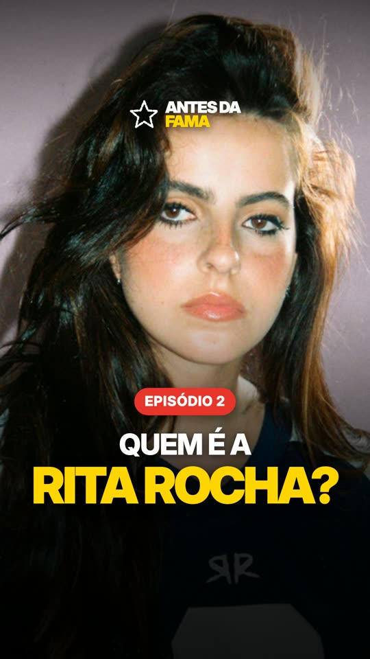

O curso que largaram. O primeiro palco. A música que mudou tudo. Contamos em um minuto como começaram os artistas portugueses, antes de toda a gente saber o nome deles.

+500 mil visualizações e 1.700 seguidores na primeira semanavisualizações só no TikTok, em 7 dias e 20 episódios. Sem anúncios, sem visualizações compradas.
Números públicos do TikTok a 26 de novembro de 2026.
Cada episódio é uma história verdadeira, com factos confirmados em entrevistas e artigos reais. Sem fofoca, sem inventar.
Novos episódios todas as semanas. O próximo pode ser o teu.
Ver no TikTokToda a gente vê o palco. Nós contamos o caminho até lá: o quarto, os nãos, o primeiro som gravado com o microfone do computador.
Lemos as entrevistas, os artigos e os arquivos. Só entra o que conseguimos confirmar.
Encontramos o momento em que tudo podia ter corrido mal e construímos a história à volta dele.
Voz, motion, legendas e capa. Um minuto que se vê até ao fim e se manda a um amigo.
Do Salvador Sobral a quem ainda está a começar: o mesmo formato, a mesma pesquisa.
"Toda a gente vê o palco. Nós contamos o caminho até lá."Antes da Fama
Estamos a abrir espaço no canal para artistas independentes. Se a tua história merece ser contada, conta-nos.
A tua música e a tua história, em poucas linhas.
Se encaixar no canal, enviamos todos os detalhes.
Em 3 a 5 dias depois de fecharmos tudo. Tu confirmas os factos antes de sair.
Os episódios de artistas independentes são parcerias e vão marcados como tal.
Não. O canal é sobre quem ainda está a começar também. Contamos histórias de nomes grandes e de artistas independentes.
Nós. Pesquisamos, escrevemos e montamos tudo. Tu lês e confirmas os factos antes de sair.
3 a 5 dias depois de fecharmos tudo e recebermos o material.
No nosso TikTok e Instagram, @antesdafama_pt. E o vídeo também fica teu para publicares.
Não, ninguém pode garantir isso com honestidade. Garantimos o mesmo cuidado que pomos em todos os episódios.
Os episódios de artistas independentes são parcerias e vão marcados como tal. Falamos de tudo por email depois de lermos a tua história.
És artista, manager, editora, ou só alguém que conhece uma boa história? Manda-nos. Lemos todos os pedidos.
Obrigado. Recebemos a tua história e vamos ler com calma. Se avançar, falamos contigo por email.
Mandámos-te também um email de confirmação.